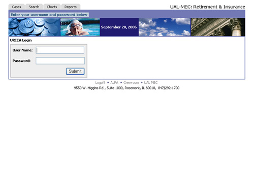

|  |
What I did...
In 2005, as a solo project from design to development to production, I built this retirement and insurance issue tracking system for United Air Lines. This application is complete with administration tools, and dynamically generated reports and graphs, which can be downloaded as Excel or Word Documents. It uses a SQL Server database. Additionally it has case history and the ability to search cases. An ASP.NET application written in VB.NET. |